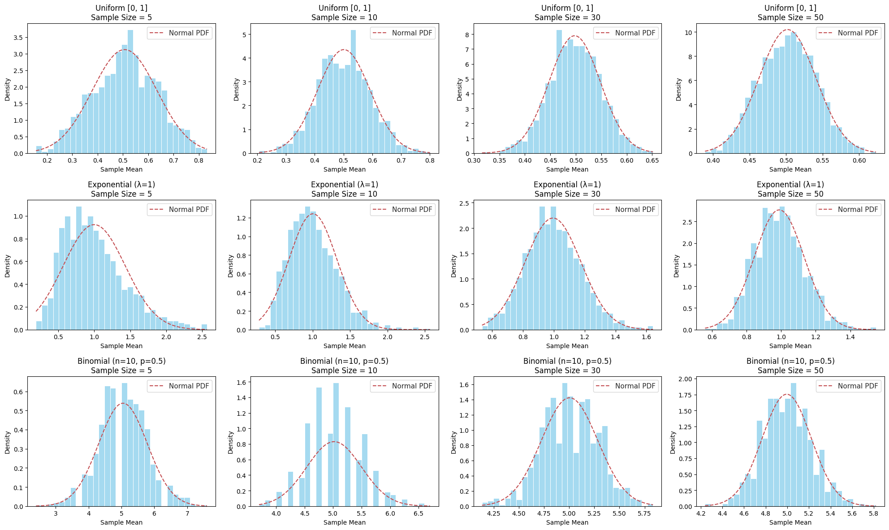
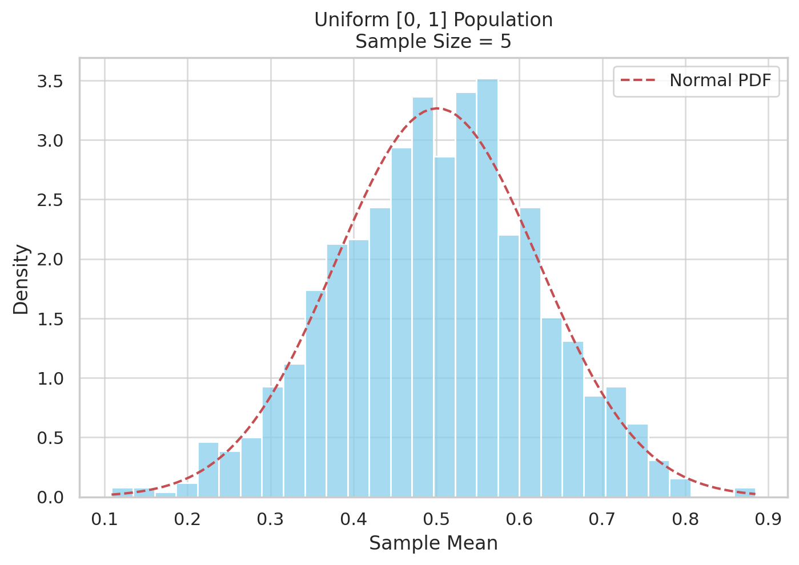
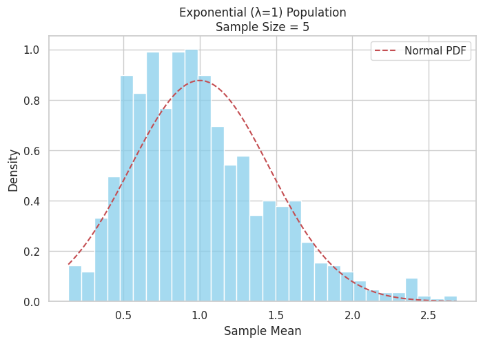

Problem 1
Central Limit Theorem (CLT) Exploration via Simulation
Motivation
The Central Limit Theorem (CLT) is one of the foundational concepts in statistics. It states that as the sample size increases, the sampling distribution of the sample mean tends toward a normal distribution, even if the original population distribution is not normal.
This property allows statisticians to make reliable inferences about population parameters using sample data — a principle that underpins many statistical methods used in real-world applications such as manufacturing, medicine, and finance.
By using simulations, we can observe and understand the CLT intuitively and practically.
Problem Statement: Simulating the CLT
We aim to demonstrate the CLT by:
- Generating large populations from different distributions.
- Sampling repeatedly from each population using different sample sizes.
- Visualizing how the distribution of sample means changes as the sample size increases.
Simulation Plan
1. Population Distributions to Explore
We selected the following distributions, each with distinct characteristics:
- Uniform [0, 1] → Continuous, bounded, symmetric
- Exponential (λ = 1) → Continuous, right-skewed
- Binomial (n = 10, p = 0.5) → Discrete, symmetric
Each population contains 100,000 values to mimic an effectively infinite population.
2. Sampling and Visualization Procedure
For each population:
- Take 1000 random samples of sizes: 5, 10, 30, 50
- Calculate the sample mean for each sample
- Store these means to form a sampling distribution
- Plot the sampling distributions as histograms
- Overlay the theoretical Normal PDF based on the calculated mean and standard deviation
Visualization Output
Below is a 3×4 grid of histograms showing sampling distributions of the mean for each distribution across increasing sample sizes.
- Rows: Population types — Uniform, Exponential, Binomial
- Columns: Sample sizes — 5, 10, 30, 50
Interpretation of Results
Uniform Distribution [0, 1]
- n = 5: Slightly irregular, but roughly symmetric
- n = 10: Becomes smoother
- n = 30–50: Very close to normal
Exponential Distribution (λ = 1)
- n = 5: Strongly skewed
- n = 10: Still skewed, but less so
- n = 30–50: Clearly approaching a normal bell curve
Binomial Distribution (n=10, p=0.5)
- n = 5: Already approximately symmetric
- n = 10–50: Smooth and almost perfectly normal
Parameter Exploration
Sample Size Effect
| Sample Size | Effect on Sampling Distribution |
|---|---|
| 5 | Often skewed and irregular |
| 10 | Some smoothing appears |
| 30 | Typically close to normal |
| 50 | Strong approximation of normality |
Population Shape & Variance
| Distribution | Skewed? | Impact on Convergence | Variance Impact |
|---|---|---|---|
| Uniform | No | Fast convergence | Lower spread |
| Exponential | Yes | Slower convergence | High variance delays normality |
| Binomial (p=0.5) | No | Quick convergence | Centered around expected value |

Exploring the Central Limit Theorem (CLT) via Simulation
Summary of Visualization
The figure below illustrates the Central Limit Theorem (CLT) using three different population distributions and four different sample sizes. Each subplot shows the distribution of sample means computed from 1000 repeated random samples.
What is the Central Limit Theorem?
The CLT states that the sampling distribution of the sample mean will approach a normal distribution as the sample size increases — regardless of the population's original distribution, provided that the samples are i.i.d. and the population has finite variance.
🧩 Structure of the Plot
| Row | Population Type | Nature |
|---|---|---|
| 1 | Uniform [0, 1] | Continuous, flat |
| 2 | Exponential (λ = 1) | Continuous, skewed |
| 3 | Binomial (n=10, p=0.5) | Discrete, symmetric |
| Column | Sample Size |
|---|---|
| 1 | 5 |
| 2 | 10 |
| 3 | 30 |
| 4 | 50 |
Each histogram shows: - Blue bars = Distribution of sample means - Red dashed curve = Normal PDF fitted to those means
Normal PDF (for overlay)
x = np.linspace(min(sample_means), max(sample_means), 100) pdf = norm.pdf(x, loc=mu, scale=sigma)

Exponential Distribution (λ = 1) – Sample Size = 5
Interpretation:
- This histogram shows the distribution of 1000 sample means, each calculated from a sample of size 5 drawn from an exponential population (λ = 1).
- The red dashed curve represents the theoretical normal distribution fitted to the observed sample means (using the computed mean and standard deviation).
Observations:
- The distribution of sample means is still right-skewed, closely resembling the original exponential population.
- Skewness is preserved when the sample size is small, which is why the distribution does not yet resemble a normal curve.
- Although the Central Limit Theorem (CLT) guarantees convergence toward normality, this example shows that a sample size of 5 is not large enough for the CLT to take full effect for highly skewed populations.
Conclusion:
This visualization demonstrates that: - For small sample sizes, the sampling distribution of the mean still reflects the original population’s shape. - The Central Limit Theorem requires larger sample sizes to work effectively when the original distribution is skewed, such as exponential distributions.
